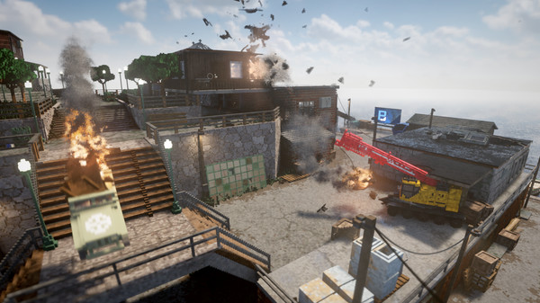
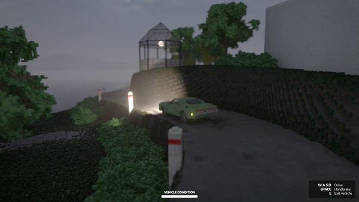
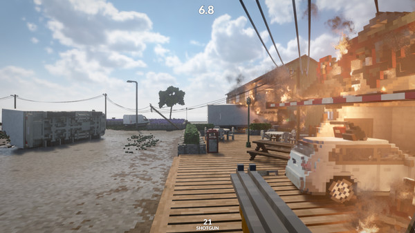

FYC://Teardown
=-=-=-=-=-=-=-=-=-=-=-=-=-=-=-=-=-=-=

Home
Download/Stream:
Magnet
Torrent
Play now (Stream)
Descption:

Title: Teardown
Genre: Action, Indie, Simulation, Strategy, Early Access
Developer: Tuxedo Labs
Publisher: Tuxedo Labs
Release Date: 29 Oct, 2020
About This Game
Prepare the perfect heist in this simulated and fully destructible voxel world. Tear down walls with vehicles or explosives to create shortcuts. Stack objects to reach higher. Use the environment to your advantage in the most creative way you can think of.
System Requirements
Minimum:
Requires a 64-bit processor and operating systemOS: Windows 10Processor: Quad Core CPUMemory: 4 GB RAMGraphics: NVIDIA GeForce GTX 1060 or better Storage: 1 GB available space
Recommended:
Requires a 64-bit processor and operating systemOS: Windows 10Processor: Intel Core i7 or betterMemory: 4 GB RAMGraphics: NVIDIA GeForce GTX 1080 or better Storage: 1 GB available space


